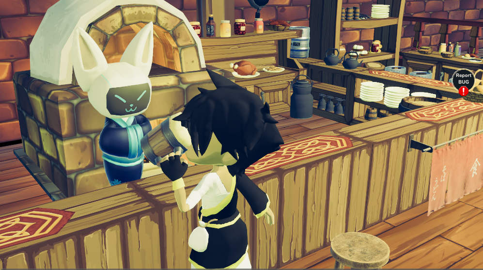
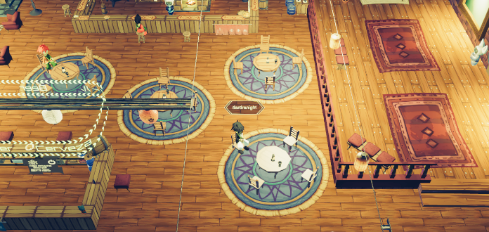
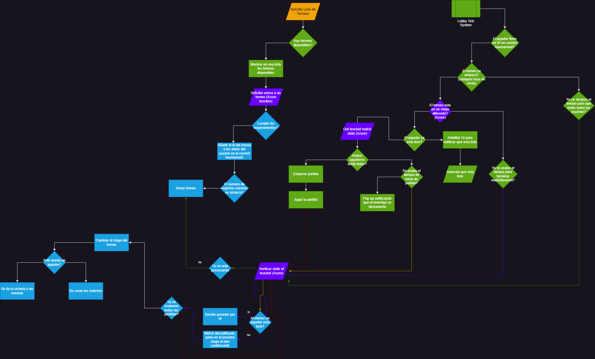

Bar
The bar is the lastest update on the game. It functions as a reunion site to drink/eat, watch shinsei fights and check tournaments. Let's see those functionalities in more details
Drinking and eating system
This system is basically a specific NPC interaction for that reason the charge script is called Cooker.cs, this script store references to the NPC animator Cooker and other props like a ber or eat plate, when character interact start to play a coroutine that play secuencially animations, show and hide objects for make the illusión of interaction, using a callback of dialogue turn on a script that show the animation pending of response of character in this case give a beer of serving a plate of food.

For decoration the bar also have a Sit system when you can see other players sitdown or you can sitdown in the chairs of bar, this system works using nearness, the first character that touch the sit can use the other player will be ignored, for reason of delay of server you can see different things when you see from one client or other, the chair always align their forward direction to the character.

Tournament system
The tournament system is a complex system that has to handle multiple cases and states of the users in order to garantee a correct flow of the tournament. We have to check the state of the whole tournament and the state of each bracket. The state of the players if they are ready or not to fight. The disconnection of players. A lot of variables to take in consideration. Here is a general flow of the system:

We start by requesting the tournament list in the bar. We request and display them with the SearchAndShow.cs filtering the ones that hasn't finished yet and then let the user decide one of them. Once the user decides we execute the JoinTournament() in the TournamentSlot.cs. If the joining was a success, we proceed to hide all the things that should be hidden in a tournament such as searching for matches or changing the shinseis position in our vault.
Then we start the timer to wait for the tournament to initiate in the ShowTimerInitTournament() of the TournamentReadyController.cs. This method checks if the tournament has started already, if it doesn't then it proceeds to show the countdown to initiate the tournament. If it has, proceeds to show the ready button for the player to start his current match in the tournament with the StartReadyButton(). This method sets the timer to get ready for the match before a disqualification. If the players clicks on the ready button then the MarkAsReady() method start to execute every X seconds. This method will send a petiton to the azure server to check if the other player also accepted the match. In this method we also check if the player won by default and, if so, then we proceed to show him the time left for the next round to begin with the ShowPendingTimeAfterMatch() . Otherwise, if the two players get ready for the match, the match starts.
Once they finished the match we proceed to check the tournament state every 3 seconds with the method CheckTournamentState() of CheckTournamentState.cs. In this method we send a petion to the server and in it's response we check a variaty of states, ranging from winner of tournament, second place, loser of match and finally winner of match. It's this last case, were we show the player the ShowPendingTimeAfterMatch() method from before, so that he can see the time to end the match. But we keep asking the server if the round has ended before time(if all players have already played their matches). If so then we show again the [StartReadyButton()] and the cycle begins again until there is a winner in the tournament.